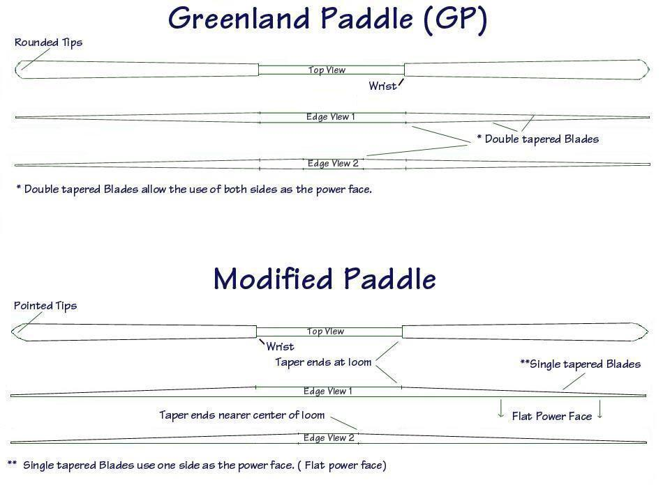

| Greenland Paddle Construction | Menu Previous Page Next Page |
|
 The paddles above illustrate the general shape and differences between of the two paddle types to be constructed in this section. The GP has rounded tips, and a double tapering blade ( two power faces). The modified paddle has pointed tips and a flat power face, with only one side tapered. This paddle is shaped similar to an Aleutian Island paddle, but lacks the ridged power face common to that type. This paddle will be constructed as a take-apart, though either paddle can be constructed this way. You will notice that both paddles have two edge profiles. In "Edge View 1", the taper of the blades end at the beginning of the loom (wrist). In "Edge View 2, the blades taper closer to the center of the loom. This allows the paddle to be thinner, on edge, at the wrist (loom to blade transition), and along the entire blade. |
|